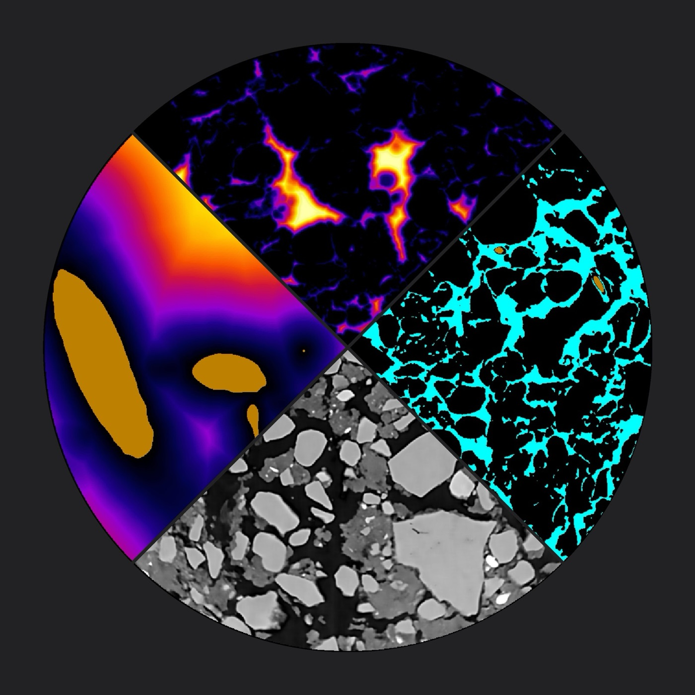

From individual pores to agricultural fields
Carbon storage, microbial activity, root–microbiome interactions, and water movement are shaped by soil structure: the arrangement of pores, particles, and interfaces. We bridge structural and biogeochemical approaches to understand soils as integrated systems across scales.
Current projects
All projects →
Soil-on-a-chip: how pore networks govern carbon dynamics
How soil pore networks regulate microbial activity and carbon cycling.

Microplastics in agricultural soils
How microplastics move, accumulate and interact within agricultural soils.

Plant–soil–microbiome systems
Biophysical processes in plant–soil–microbiome systems, with a focus on soil carbon.
Latest publications
2026 · Soil Biology and BiochemistryNitrogen availability decouples soil pore size-defined microhabitat control of microbial carbon use efficiency
2026 · Nature CommunicationsGlobal hotspots of particulate organic carbon losses under climate change
2026 · Journal of Environmental ManagementIntegrated and managed grasses shape soil pore networks and carbon processes in tropical agroecosystems
All publications →
People

Maoz Dor
Principal Investigator
Senior Lecturer (Assistant Professor)
Eliza SchalitLab Manager
Keerthana ReddyPhD Candidate
Mattea RiceMSc Student